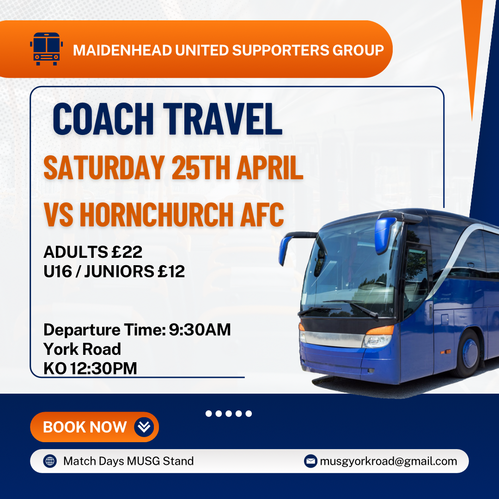

We organise coach travel to away fixtures throughout the season.
Select away day coach offerings. *Add £5 if not an MUSG Member unless otherwise stated. All departures from York Road.
| Date | Fixture | Cost (Adult Member) | Cost (Junior U16 Member) | Departure Time |
|---|---|---|---|---|
| 25th April 2026 | Hornchurch AFC | £22 | £12 | 9:30 |
